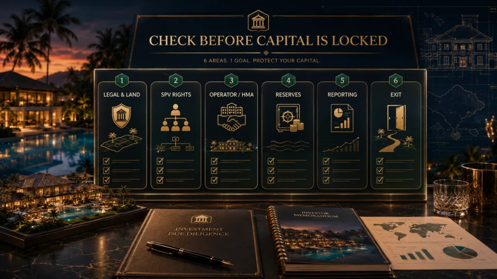

Tokenized Hotel Investment Bali: Governance Gaps That Put Buyer Capital at Risk
Tokenized hotel investment in Bali can expose buyers to SPV, HMA, reserve, reporting, and exit risks. A governance guide for investors.
Zenith Journal··14 min read·by Zenith Hospitality
Tokenized hotel investment Bali products can look safer than they are because the token feels like the asset. It is not. The token is only the wrapper.
If the hotel asset underneath has no proper operating agreement, no reserve policy, no audited reporting, no operator accountability, and no real exit mechanism, tokenization makes the investment easier to sell - not safer to own.
Fractionalized and tokenized hotel investment products are increasingly marketed to foreign buyers as a passive-income pathway into Bali hospitality. The pitch is attractive: lower entry price, digital ownership, pooled exposure, hospitality management, and potential income from an asset most buyers could not acquire alone.
The real question is different.
What does the buyer actually control after purchasing the token?
This article is written for investors, family offices, asset managers, developers, and hospitality owners evaluating tokenized or fractional hotel exposure in Bali. It is not legal, tax, or financial advice. It is an owner-side governance framework for understanding where buyer capital is exposed.
Key Takeaways
A tokenized hotel investment Bali product should not be confused with direct hotel ownership. In many structures, buyers hold economic rights linked to an SPV, not direct land title or direct control over the operating asset.
OJK’s digital financial asset and Real World Asset framework is evolving, but regulation of the token layer does not automatically solve hotel governance, operator performance, reserves, or exit rights.
The critical documents are not only the token terms. Investors must review the SPV agreement, land tenure, HMA or operator agreement, reserve policy, reporting rights, distribution waterfall, and exit mechanism.
A hotel without an FF&E reserve, working-capital controls, and operator performance accountability can distribute cash in the short term while quietly destroying asset value.
The core Zenith position is simple: the token does not protect the owner. Governance does.
Why Tokenized Hotel Investment in Bali Matters Now
In April 2026, OJK also confirmed work on a draft regulation for tokenized asset offerings and Real World Asset tokenization. The planned scope includes Digital Financial Assets representing real assets, offering procedures, licensing, reporting, and consumer protection.
That matters for Bali hospitality because the island remains one of Southeast Asia’s most heavily marketed property and hospitality investment destinations. Developers are under pressure to raise capital. Foreign buyers face land-ownership restrictions. Fractionalization and tokenization offer a convenient answer: instead of selling land title, the promoter sells economic participation in a structure that holds or controls the asset.
That structure may be legitimate.
It may also be weak.
The key issue is not whether blockchain can represent an economic interest. The issue is whether the legal and operating structure underneath the token creates enforceable investor protection.
For a wider owner-side view on how investors should protect control before capital is committed, see Zenith’s article on the Bali hotel owner’s representative role.
The Core Problem in Tokenized Hotel Investment Bali: The Token Is Not the Governance
A tokenized hotel investment usually separates three things that many buyers assume are the same:
Buyer Assumption
Governance Reality
“I own part of the hotel.”
You may own a token linked to economic rights in an SPV.
“The property is regulated.”
The platform or financial asset layer may be regulated, but the hotel operating model still needs review.
“There is a manager.”
A manager is not the same as a signed HMA with performance tests, reserve rules, and termination rights.
“I can resell my token.”
Liquidity depends on market depth, transfer rules, buyer demand, and platform continuity.
“Projected yield means real NOI.”
Yield projections can be meaningless if they ignore capex, FF&E reserves, taxes, management fees, working capital, and ramp-up risk.
In Bali, this problem becomes sharper because foreign investors cannot treat a digital token as a substitute for Indonesian land-right due diligence. Indonesia’s agrarian law framework is rooted in specific land-right categories, and Law No. 5 of 1960 on Basic Agrarian Principles remains part of the legal foundation investors must understand with Indonesian counsel.
For investors, this means the token should be treated as the top layer of the structure, not the foundation.
The foundation is the legal entity, land tenure, operator agreement, reserve policy, reporting system, and exit mechanism.
What Investors Get Wrong About Fractional Hotel Ownership in Bali
1. They confuse regulatory status with investment protection
A licensed, registered, or sandbox-tested platform may reduce certain regulatory risks. It does not automatically protect the investor from a weak hotel concept, poor operator, underfunded pre-opening, inflated capex, bad reporting, or no exit.
OJK’s direction is important, but hotel investment risk is wider than financial-asset compliance. A hotel is an operating business. It needs governance beyond the token.
2. They focus on projected yield instead of distributable cash
Projected yield is not the same as distributable cash.
A hotel can report operating profit and still need cash for working capital, FF&E replacement, maintenance, staffing ramp-up, system upgrades, marketing, OTA commissions, owner costs, tax, insurance, and contingency reserves.
If the structure distributes too aggressively in the early years, investors may receive short-term income while the asset quietly loses competitiveness.
This is the same commercial logic behind broader hotel operating costs in Bali: the visible yield number is only useful if the cost architecture underneath it is honest.
3. They accept “managed by our hospitality team” as operator accountability
A hotel operator should not be accepted because a deck says the asset will be “professionally managed.”
Investors need to know:
Who is the operator?
Is there a signed HMA or equivalent operating agreement?
What are the operator’s duties?
How are fees calculated?
What budget rights exist?
Who approves capex?
What performance test applies?
What happens if the operator underperforms?
Who can terminate or replace the operator?
A hotel management contract is not decoration. HVS describes a hotel management contract as an arrangement where the hotel owner contracts with a separate operator to run the hotel, often with measurable performance standards and defined owner/operator responsibilities. See the HVS reference on hotel management contracts.
4. They assume tokenization creates liquidity
Tokenization can create transferability. That is not the same as liquidity.
Liquidity requires an actual market, eligible buyers, compliant transfer rules, a functioning platform, accepted valuation, and enough demand at the time the investor wants to sell. For Bali hotel investors, the practical assumption should be conservative:
If there is no contractual redemption right, no scheduled liquidity event, no enforceable buyback mechanism, and no proven secondary market, assume the position is illiquid.
The Zenith View
Zenith does not evaluate tokenized hotel investment Bali structures primarily as crypto products.
We evaluate them as hospitality operating structures.
The investor question is not:
“Is there a token?”
The investor question is:
“Does the structure give buyer capital the same minimum governance protections that a serious hotel owner would demand before appointing an operator?”
That means reviewing the asset through seven layers:
Legal structure
Land tenure
SPV governance
Operator accountability
Reserve and working-capital controls
Reporting and audit rights
Exit and transfer mechanism
If one of these layers is weak, the token may simply digitize an unprotected exposure.
This is also why family offices should not evaluate hospitality like generic real estate. Zenith’s article on family office hospitality investment explains why Product DNA, operator discipline, HMA control, and pre-opening governance must be tested before capital is committed.
Governance Stack for Tokenized Hotel Investment in Bali
Governance Layer
Investor Question
Red Flag
Regulatory status
Is the platform licensed, approved, registered, or only marketing itself as compliant?
“OJK-aligned” language without documentation.
Land tenure
Who legally holds the land or lease rights, and for how long?
Vague nominee language, unclear lease term, no renewal logic.
SPV structure
What exactly does the token holder own or have a right to receive?
Economic rights described in marketing but not in enforceable documents.
Operator agreement
Is there a signed HMA or equivalent agreement?
“In-house hospitality team” with no performance obligations.
Performance test
Can underperformance trigger review, cure, fee adjustment, or termination?
No GOP, RevPAR, budget, or owner-return test.
FF&E reserve
Is there a ring-fenced reserve for furniture, fixtures, equipment, and lifecycle replacement?
All cash treated as distributable yield.
Working capital
Is opening and operating liquidity properly funded?
Distributions before operating stability.
Budget rights
Who approves the annual budget, capex, staffing plan, and pricing strategy?
Developer/operator controls all decisions.
Reporting
Are financial statements audited and delivered on a fixed schedule?
No independent audit, no owner dashboard, no data rights.
Exit
How can the investor sell, redeem, or exit?
“Marketplace” language without committed buyers or redemption obligation.
Operational Implications
A hotel is not a static asset. It is an operating machine.
If tokenized investors are passive and the developer controls operations without institutional governance, several operational risks emerge.
Underfunded pre-opening
A hotel may be sold on renderings and yield assumptions before realistic pre-opening budgets are locked. Hiring, training, SOP development, systems setup, commercial launch, brand positioning, and soft-opening defects all require cash.
If these costs are underestimated, the hotel may open weak and never reach its forecast.
No reserve discipline
Hotels consume FF&E.
Rooms, beds, linen, air-conditioning, lighting, pool equipment, spa equipment, kitchen equipment, and digital systems need replacement cycles. If the SPV distributes cash without reserving for lifecycle replacement, the asset may look profitable while deteriorating.
Operator without accountability
A developer-controlled operator may prioritize sales promises, not long-term asset performance. Without performance testing, budget approval, and replacement rights, token holders may have no practical route to challenge underperformance.
Reporting opacity
Hospitality performance depends on daily data: occupancy, ADR, RevPAR, GOP, channel mix, payroll cost, OTA commission, direct booking share, maintenance backlog, guest satisfaction, and reputation scores.
Token holders who receive only a high-level distribution statement are not receiving real owner reporting.
Commercial Implications
The main commercial risk is not that the token price falls.
The main commercial risk is that the hotel’s operating fundamentals never support the token’s promised economics.
NOI can be overstated
If projected returns exclude replacement reserves, true owner costs, tax leakage, ramp-up losses, platform fees, management fees, marketing cost, and working-capital needs, the advertised return is not an investment-grade underwriting case.
Exit discounts can be severe
A buyer in the secondary market will ask harder questions than the first buyer did. If the structure lacks audited financials, reserve accounts, operator accountability, and enforceable rights, the resale price may require a material discount.
Asset value can erode quietly
A hotel can stay open while losing value. Weak maintenance, poor service standards, bad reviews, inconsistent training, under-invested rooms, and no brand discipline can reduce ADR, RevPAR, and long-term asset value.
This is the same commercial logic visible in Bali’s broader supply problem. In markets exposed to oversupply and rate pressure, governance becomes more important, not less. See Zenith’s analysis of the Bali real-estate bubble and oversupply risk.
Governance affects capital cost
Family offices and institutional investors price governance risk. A tokenized structure with weak documentation, unclear land rights, no HMA, and no exit route should trade at a higher risk premium than a properly structured hospitality investment.
Tokenized Hotel Investment Bali Due Diligence Before Committing Capital
Before investing in a tokenized or fractional hotel product in Bali, request the following documents and answers.
1. Legal and land structure
Which entity holds the land, lease, or usage rights?
What is the land-right type?
What is the remaining tenure?
Are renewal rights documented?
Are there nominee arrangements?
Is the structure reviewed by Indonesian legal counsel?
2. SPV and token-holder rights
What does the token legally represent?
Is it equity, debt, revenue participation, profit share, or contractual entitlement?
What voting rights exist?
Can token holders approve major decisions?
What happens if the platform fails?
3. Operator accountability
Is there a signed HMA or equivalent operating agreement?
Who is the operator?
What are the operator’s fees?
What performance tests apply?
Can the operator be removed?
Who approves the annual budget?
4. Capital reserve policy
Is there a dedicated FF&E reserve?
What percentage of revenue is reserved?
Who controls withdrawals?
Is working capital funded before distributions?
Are reserve accounts ring-fenced?
5. Reporting and audit
Are financial statements audited?
How often are owner reports issued?
Will investors receive hotel KPIs or only distribution statements?
Are operating bank accounts independently monitored?
Are related-party transactions disclosed?
6. Exit and liquidity
Is there a contractual buyback or only a marketing promise?
Is there a secondary market with proven volume?
Are transfers restricted by KYC, jurisdiction, or investor eligibility?
What valuation methodology applies on resale?
What happens if no buyer exists?
For investors looking at broader Bali hotel investment risk, the Zenith blog contains related owner-side analysis on feasibility, operating costs, oversupply, compliance, pre-opening, and hotel governance.

FAQ
Is tokenized hotel investment in Bali the same as owning hotel real estate?
No. In most structures, the buyer is not directly acquiring land or hotel title. The buyer is acquiring a token linked to economic rights in a legal structure, often an SPV. The underlying land or lease must still be held by an entity recognized under Indonesian law. The investor should review what the token legally represents before treating it as ownership.
Does OJK regulation make tokenized hotel investment Bali products safe?
No. OJK regulation can improve oversight of the financial-asset or platform layer, but it does not automatically make the underlying hotel investment commercially sound. Investors still need to review the land structure, SPV terms, operator agreement, reserve policy, reporting rights, audit process, and exit mechanism.
What is the biggest governance risk in tokenized hotel investments?
The biggest governance risk is the absence of owner-grade control over the operating asset. If there is no signed HMA, no performance test, no FF&E reserve, no budget approval process, no audited reporting, and no operator replacement mechanism, investors may be economically exposed without practical control.
Why does an HMA matter in a tokenized hotel product?
An HMA or equivalent operator agreement defines who runs the hotel, how fees are paid, how budgets are approved, what performance standards apply, and what remedies exist if the operator underperforms. Without this agreement, the hotel may be managed by the developer or an affiliated team without institutional accountability.
Are tokenized hotel investments liquid?
Not automatically. Tokenization can make an interest transferable, but liquidity requires buyers, compliant transfer rules, market depth, transparent valuation, and a functioning platform. If there is no contractual redemption right or proven secondary market, investors should assume the position may be illiquid.
What should a family office check before investing?
A family office should review the SPV documents, land tenure, OJK/platform status, HMA, reserve policy, working-capital plan, audited financial model, distribution waterfall, reporting rights, tax treatment, related-party transactions, and exit mechanism. The investment should be tested like a hotel asset, not only like a digital token.
Summary Takeaways
Tokenized hotel investment can be a useful capital-raising and access mechanism. But it does not remove the need for institutional hospitality governance.
In Bali, the most important questions are not only legal or technological. They are operating questions:
Who controls the hotel?
Who protects the reserve accounts?
Who approves the budget?
Who holds the operator accountable?
Who audits the financials?
Who decides distributions?
Who provides liquidity?
Who protects the buyer when the project underperforms?
If those answers are weak, the investment is weak.
The token does not protect the owner. Governance does.
CTA
Before committing capital to a tokenized hotel investment Bali structure, request an owner-side governance review.
Zenith Hospitality Global can review the SPV structure, hotel management agreement, reserve policy, reporting rights, commercial assumptions, and exit mechanism from an operator-first hospitality perspective - before buyer capital is locked into a structure it cannot control.
To understand Zenith’s wider consultancy, feasibility, compliance, pre-opening, and operating capability, see About Zenith Hospitality Global.